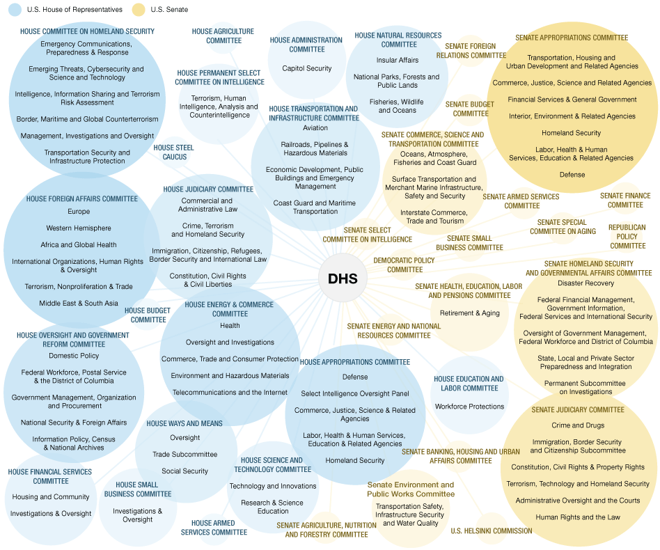

Open Source: A Guide
Adventuring toolkit for would be Open Source heros
Created by Tim Bielawa and Andrew Butcher
An Open Source Scholarship
So who are these guys anyway?
Just bros, really


A brief history of
Open Source
"Free Software"


 Free Software Foundation
Free Software Foundation
freedom 0
The freedom to run the program, for any purpose.
freedom 1
The freedom to study how the program works, and change it so it does your computing as you wish. Access to the source code is a precondition for this.
freedom 2
The freedom to redistribute copies so you can help your neighbor.
freedom 3
The freedom to distribute copies of your modified versions to others. By doing this you can give the whole community a chance to benefit from your changes. Access to the source code is a precondition for this.
The GNU Project
GCC: GNU C Compiler
GDB: GNU Debugger
GMAKE
…
Real Hackers™
use
real editors™


Hobbyist Era


Open Source Era


Linus' Law:
Given enough eyeballs, all bugs are shallow.

The Open Source Initiative


Open Source Communities
Open Source Communities
SIG
Fedora Special Interest Groups
- Amateur Radio
- Audio Creation
- Java
- Robotics
- Science & Technology
- and many more...
Open Source Communities
How will this get me a job?

98 percent of all enterprise companies are using open-source software in some capacity


Anatomy of an Open Source Project
Version Control System
Code
#!/usr/bin/env python
import os
import sys
from glob import glob
sys.path.insert(0, os.path.abspath('lib'))
from ansible import __version__, __author__
from distutils.core import setup
# find library modules
from ansible.constants import DIST_MODULE_PATH
data_files = [ (DIST_MODULE_PATH, glob('./library/*')) ]
print "DATA FILES=%s" % data_files
Tests
make tests
Website
Documentation
Being 'open source' isn't an
excuse for not having any/correct
documentation. It's not a community
task, it's your job.
Examples
Patch submission guidelines
(getting involved)
Installer / Packaging
./configure && make && make install
Hacking setup
. ./hacking/env-setup
How can I get involved?
Some anecdotes...
jade-mode
Pull Requestprtdata-akbutcher.rhcloud.com
slocate
pbzip2
My red hat inverview


Where is this fruit? (part 1)
Where is this fruit? (part 2)
Where is this fruit? (part 3)
Contributions are more than code.
Jordan Sissel - Czar of Logging at DreamHostummmmm hi. can i ask a qustion?
You just did

FIN(NISH)
Any Questions?
Contact Info
Tim Bielawa - tbielawa@redhat.com - @tbielawa
Andrew Butcher - abutcher@redhat.com - @akbutcher
Communicate!
IRC: chat.freenode.net #opensourcescholars